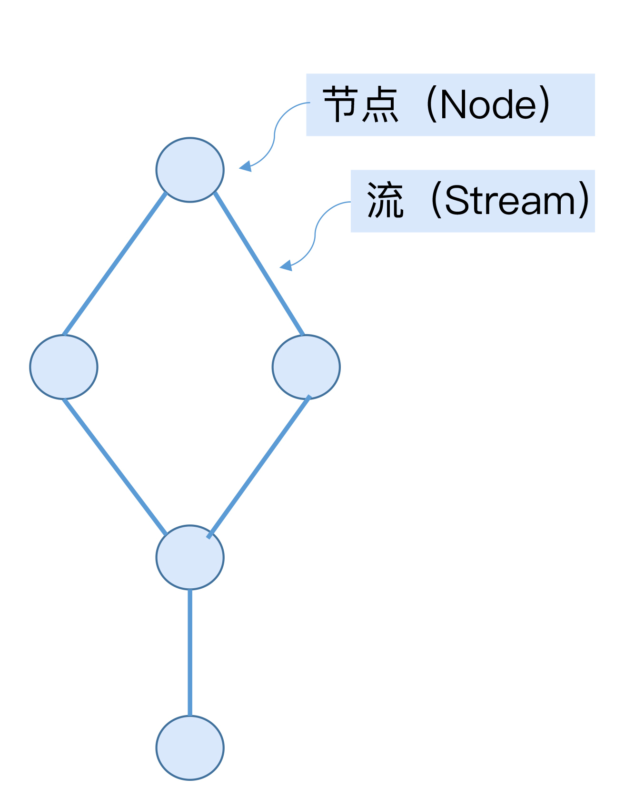
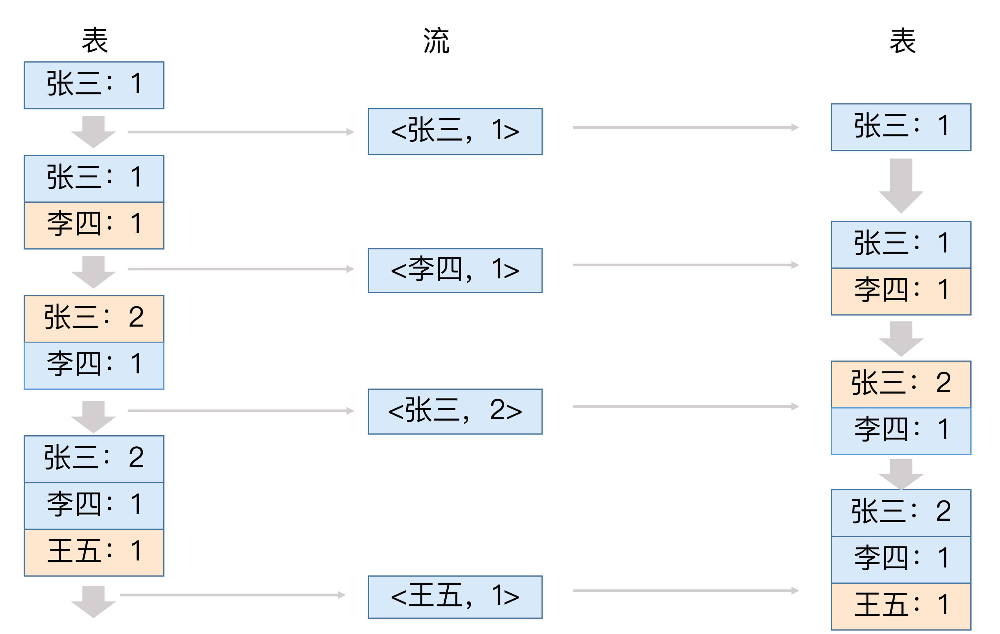
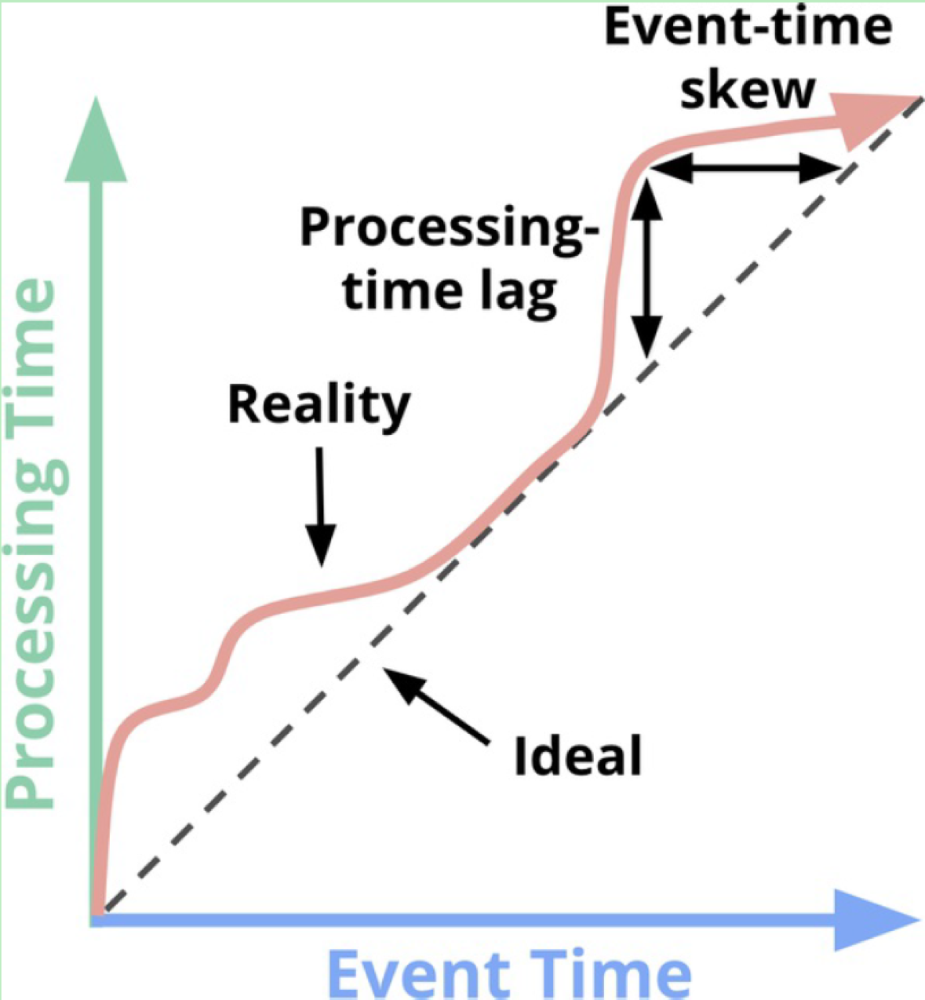
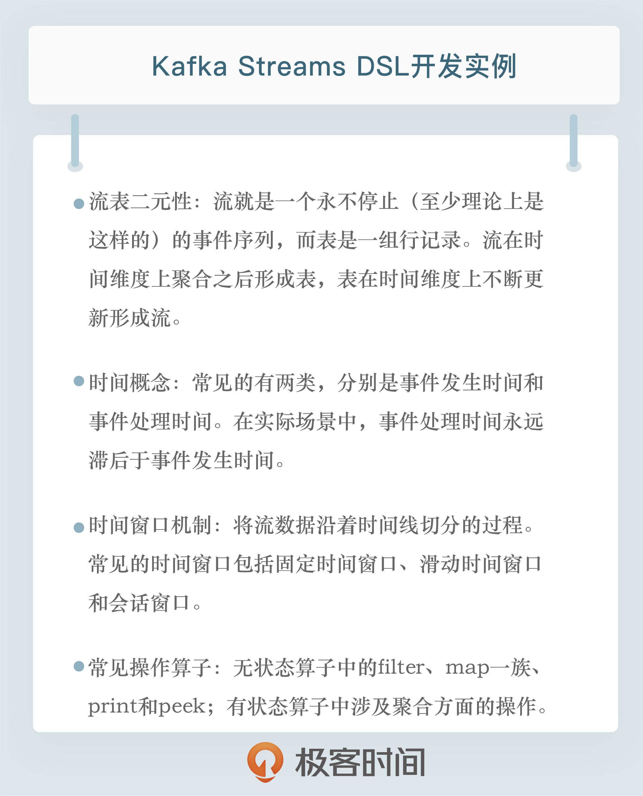

- 00 开篇词 为什么要学习Kafka？.md.html
- 01 消息引擎系统ABC.md.html
- 02 一篇文章带你快速搞定Kafka术语.md.html
- 03 Kafka只是消息引擎系统吗？.md.html
- 04 我应该选择哪种Kafka？.md.html
- 05 聊聊Kafka的版本号.md.html
- 06 Kafka线上集群部署方案怎么做？.md.html
- 07 最最最重要的集群参数配置（上）.md.html
- 08 最最最重要的集群参数配置（下）.md.html
- 09 生产者消息分区机制原理剖析.md.html
- 10 生产者压缩算法面面观.md.html
- 11 无消息丢失配置怎么实现？.md.html
- 12 客户端都有哪些不常见但是很高级的功能？.md.html
- 13 Java生产者是如何管理TCP连接的？.md.html
- 14 幂等生产者和事务生产者是一回事吗？.md.html
- 15 消费者组到底是什么？.md.html
- 16 揭开神秘的“位移主题”面纱.md.html
- 17 消费者组重平衡能避免吗？.md.html
- 18 Kafka中位移提交那些事儿.md.html
- 19 CommitFailedException异常怎么处理？.md.html
- 20 多线程开发消费者实例.md.html
- 21 Java 消费者是如何管理TCP连接的_.md.html
- 22 消费者组消费进度监控都怎么实现？.md.html
- 23 Kafka副本机制详解.md.html
- 24 请求是怎么被处理的？.md.html
- 25 消费者组重平衡全流程解析.md.html
- 26 你一定不能错过的Kafka控制器.md.html
- 27 关于高水位和Leader Epoch的讨论.md.html
- 28 主题管理知多少_.md.html
- 29 Kafka动态配置了解下？.md.html
- 30 怎么重设消费者组位移？.md.html
- 31 常见工具脚本大汇总.md.html
- 32 KafkaAdminClient：Kafka的运维利器.md.html
- 33 Kafka认证机制用哪家？.md.html
- 34 云环境下的授权该怎么做？.md.html
- 35 跨集群备份解决方案MirrorMaker.md.html
- 36 你应该怎么监控Kafka？.md.html
- 37 主流的Kafka监控框架.md.html
- 38 调优Kafka，你做到了吗？.md.html
- 39 从0搭建基于Kafka的企业级实时日志流处理平台.md.html
- 40 Kafka Streams与其他流处理平台的差异在哪里？.md.html
- 41 Kafka Streams DSL开发实例.md.html
- 42 Kafka Streams在金融领域的应用.md.html
- 加餐 搭建开发环境、阅读源码方法、经典学习资料大揭秘.md.html
- 用户故事 黄云：行百里者半九十.md.html
- 结束语 以梦为马，莫负韶华！.md.html
- 捐赠
41 Kafka Streams DSL开发实例
你好，我是胡夕。今天我要和你分享的主题是：Kafka Streams DSL开发实例。
DSL，也就是Domain Specific Language，意思是领域特定语言。它提供了一组便捷的API帮助我们实现流式数据处理逻辑。今天，我就来分享一些Kafka Streams中的DSL开发方法以及具体实例。
Kafka Streams背景介绍
在上一讲中，我们提到流处理平台是专门处理无限数据集的引擎。就Kafka Streams而言，它仅仅是一个客户端库。所谓的Kafka Streams应用，就是调用了Streams API的普通Java应用程序。只不过在Kafka Streams中，流处理逻辑是用拓扑来表征的。
一个拓扑结构本质上是一个有向无环图（DAG），它由多个处理节点（Node）和连接节点的多条边组成，如下图所示：

图中的节点也称为处理单元或Processor，它封装了具体的事件处理逻辑。Processor在其他流处理平台也被称为操作算子。常见的操作算子包括转换（map）、过滤（filter）、连接（join）和聚合（aggregation）等。后面我会详细介绍几种常见的操作算子。
大体上，Kafka Streams开放了两大类API供你定义Processor逻辑。
第1类就是我刚刚提到的DSL，它是声明式的函数式API，使用起来感觉和SQL类似，你不用操心它的底层是怎么实现的，你只需要调用特定的API告诉Kafka Streams你要做什么即可。
举个简单的例子，你可以看看下面这段代码，尝试理解下它是做什么的。
movies.filter((title, movie) -> movie.getGenre().equals("动作片")).xxx()...
这段代码虽然用了Java 8的Lambda表达式，但从整体上来看，它要做的事情应该还是很清晰的：它要从所有Movie事件中过滤出影片类型是“动作片”的事件。这就是DSL声明式API的实现方式。
第2类则是命令式的低阶API，称为Processor API。比起DSL，这组API提供的实现方式更加灵活。你可以编写自定义的算子来实现一些DSL天然没有提供的处理逻辑。事实上，DSL底层也是用Processor API实现的。
目前，Kafka Streams DSL提供的API已经很丰富了，基本上能够满足我们大部分的处理逻辑需求，我今天重点介绍一下DSL的使用方法。
不论是用哪组API实现，所有流处理应用本质上都可以分为两类：有状态的（Stateful）应用和无状态的（Stateless）应用。
有状态的应用指的是应用中使用了类似于连接、聚合或时间窗口（Window）的API。一旦调用了这些API，你的应用就变为有状态的了，也就是说你需要让Kafka Streams帮你保存应用的状态。
无状态的应用是指在这类应用中，某条消息的处理结果不会影响或依赖其他消息的处理。常见的无状态操作包括事件转换以及刚刚那个例子中的过滤等。
关键概念
了解了这些背景之后，你还需要掌握一些流处理领域内的关键概念，即流、表以及流表二元性，还有时间和时间窗口。
流表二元性
首先，我来介绍一下流处理中流和表的概念，以及它们之间的关系。
流就是一个永不停止（至少理论上是这样的）的事件序列，而表和关系型数据库中的概念类似，是一组行记录。在流处理领域，两者是有机统一的：流在时间维度上聚合之后形成表，表在时间维度上不断更新形成流，这就是所谓的流表二元性（Duality of Streams and Tables）。流表二元性在流处理领域内的应用是Kafka框架赖以成功的重要原因之一。
下面这张图展示了表转换成流，流再转换成表的全过程。

刚开始时，表中只有一条记录“张三：1”。将该条记录转成流，变成了一条事件。接着，表增加了新记录“李四：1”。针对这个变更，流中也增加了对应的新事件。之后，表中张三的对应值，从1更新为2，流也增加了相应的更新事件。最后，表中添加了新数据“王五：1”，流也增加了新记录。至此，表转换成流的工作就完成了。
从这个过程中我们可以看出，流可以看作是表的变更事件日志（Changelog）。与之相反的是，流转换成表的过程，可以说是这个过程的逆过程：我们为流中的每条事件打一个快照（Snapshot），就形成了表。
流和表的概念在流处理领域非常关键。在Kafka Streams DSL中，流用KStream表示，而表用KTable表示。
Kafka Streams还定义了GlobalKTable。本质上它和KTable都表征了一个表，里面封装了事件变更流，但是它和KTable的最大不同在于，当Streams应用程序读取Kafka主题数据到GlobalKTable时，它会读取主题所有分区的数据，而对KTable而言，Streams程序实例只会读取部分分区的数据，这主要取决于Streams实例的数量。
时间
在流处理领域内，精确定义事件时间是非常关键的：一方面，它是决定流处理应用能否实现正确性的前提；另一方面，流处理中时间窗口等操作依赖于时间概念才能正常工作。
常见的时间概念有两类：事件发生时间（Event Time）和事件处理时间（Processing Time）。理想情况下，我们希望这两个时间相等，即事件一旦发生就马上被处理，但在实际场景中，这是不可能的，Processing Time永远滞后于Event Time，而且滞后程度又是一个高度变化，无法预知，就像“Streaming Systems”一书中的这张图片所展示的那样：

该图中的45°虚线刻画的是理想状态，即Event Time等于Processing Time，而粉色的曲线表征的是真实情况，即Processing Time落后于Event Time，而且落后的程度（Lag）不断变化，毫无规律。
如果流处理应用要实现结果的正确性，就必须要使用基于Event Time的时间窗口，而不能使用基于Processing Time的时间窗口。
时间窗口
所谓的时间窗口机制，就是将流数据沿着时间线切分的过程。常见的时间窗口包括：固定时间窗口（Fixed Windows）、滑动时间窗口（Sliding Windows）和会话窗口（Session Windows）。Kafka Streams同时支持这三类时间窗口。在后面的例子中，我会详细介绍如何使用Kafka Streams API实现时间窗口功能。
运行WordCount实例
好了，关于Kafka Streams及其DSL的基本概念我都阐述完了，下面我给出大数据处理领域的Hello World实例：WordCount程序。
每个大数据处理框架第一个要实现的程序基本上都是单词计数。我们来看下Kafka Streams DSL如何实现WordCount。我先给出完整代码，稍后我会详细介绍关键部分代码的含义以及运行它的方法。
package kafkalearn.demo.wordcount;
import org.apache.kafka.clients.consumer.ConsumerConfig;
import org.apache.kafka.common.serialization.Serdes;
import org.apache.kafka.streams.KafkaStreams;
import org.apache.kafka.streams.StreamsBuilder;
import org.apache.kafka.streams.StreamsConfig;
import org.apache.kafka.streams.kstream.KStream;
import org.apache.kafka.streams.kstream.KTable;
import org.apache.kafka.streams.kstream.Produced;
import java.util.Arrays;
import java.util.Locale;
import java.util.Properties;
import java.util.concurrent.CountDownLatch;
public final class WordCountDemo {
public static void main(final String[] args) {
final Properties props = new Properties();
props.put(StreamsConfig.APPLICATION_ID_CONFIG, "wordcount-stream-demo");
props.put(StreamsConfig.BOOTSTRAP_SERVERS_CONFIG, "localhost:9092");
props.put(StreamsConfig.DEFAULT_KEY_SERDE_CLASS_CONFIG, Serdes.String().getClass().getName());
props.put(StreamsConfig.DEFAULT_VALUE_SERDE_CLASS_CONFIG, Serdes.String().getClass().getName());
props.put(ConsumerConfig.AUTO_OFFSET_RESET_CONFIG, "earliest");
final StreamsBuilder builder = new StreamsBuilder();
final KStream<String, String> source = builder.stream("wordcount-input-topic");
final KTable<String, Long> counts = source
.flatMapValues(value -> Arrays.asList(value.toLowerCase(Locale.getDefault()).split(" ")))
.groupBy((key, value) -> value)
.count();
counts.toStream().to("wordcount-output-topic", Produced.with(Serdes.String(), Serdes.Long()));
final KafkaStreams streams = new KafkaStreams(builder.build(), props);
final CountDownLatch latch = new CountDownLatch(1);
Runtime.getRuntime().addShutdownHook(new Thread("wordcount-stream-demo-jvm-hook") {
@Override
public void run() {
streams.close();
latch.countDown();
}
});
try {
streams.start();
latch.await();
} catch (final Throwable e) {
System.exit(1);
}
System.exit(0)
在程序开头，我构造了一个Properties对象实例，对Kafka Streams程序的关键参数进行了赋值，比如application id、bootstrap servers和默认的KV序列化器（Serializer）和反序列化器（Deserializer）。其中，application id是Kafka Streams应用的唯一标识，必须要显式地指定。默认的KV序列化器、反序列化器是为消息的Key和Value进行序列化和反序列化操作的。
接着，我构造了一个StreamsBuilder对象，并使用该对象实例创建了一个KStream，这个KStream从名为wordcount-input-topic的Kafka主题读取消息。该主题消息由一组单词组成，单词间用空格分割，比如zhangsan lisi wangwu。
由于我们要进行单词计数，所以就需要将消息中的单词提取出来。有了前面的概念介绍，你应该可以猜到，KTable是很合适的存储结构，因此，下一步就是将刚才的这个KStream转换成KTable。
我们先对单词进行分割，这里我用到了flatMapValues方法，代码中的Lambda表达式实现了从消息中提取单词的逻辑。由于String.split()方法会返回多个单词，因此我们使用flatMapValues而不是mapValues。原因是，前者能够将多个元素“打散”成一组单词，而如果使用后者，我们得到的就不是一组单词，而是多组单词了。
这些都做完之后，程序调用groupBy方法对单词进行分组。由于是计数，相同的单词必须被分到一起，然后就是调用count方法对每个出现的单词进行统计计数，并保存在名为counts的KTable对象中。
最后，我们将统计结果写回到Kafka中。由于KTable是表，是静态的数据，因此这里要先将其转换成KStream，然后再调用to方法写入到名为wordcount-output-topic的主题中。此时，counts中事件的Key是单词，而Value是统计个数，因此我们在调用to方法时，同时指定了Key和Value的序列化器，分别是字符串序列化器和长整型序列化器。
至此，Kafka Streams的流计算逻辑就编写完了，接下来就是构造KafkaStreams实例并启动它了。通常来说，这部分的代码都是类似的，即调用start方法启动整个流处理应用，以及配置一个JVM关闭钩子（Shutdown Hook）实现流处理应用的关闭等。
总体来说，Kafka Streams DSL实现WordCount的方式还是很简单的，仅仅调用几个操作算子就轻松地实现了分布式的单词计数实时处理功能。事实上，现在主流的实时流处理框架越来越倾向于这样的设计思路，即通过提供丰富而便捷的开箱即用操作算子，简化用户的开发成本，采用类似于搭积木的方式快捷地构建实时计算应用。
待启动该Java程序之后，你需要创建出对应的输入和输出主题，并向输入主题不断地写入符合刚才所说的格式的单词行，之后，你需要运行下面的命令去查看输出主题中是否正确地统计了你刚才输入的单词个数：
bin/kafka-console-consumer.sh --bootstrap-server localhost:9092 \
--topic wordcount-output-topic \
--from-beginning \
--formatter kafka.tools.DefaultMessageFormatter \
--property print.key=true \
--property print.value=true \
--property key.deserializer=org.apache.kafka.common.serialization.StringDeserializer \
--property value.deserializer=org.apache.kafka.common.serialization.LongDeserializer
开发API
介绍了具体的例子之后，我们来看下Kafka Streams还提供了哪些功能强大的API。我们可以重点关注两个方面，一个是常见的操作算子，另一个是时间窗口API。
常见操作算子
操作算子的丰富程度和易用性是衡量流处理框架受欢迎程度的重要依据之一。Kafka Streams DSL提供了很多开箱即用的操作算子，大体上分为两大类：无状态算子和有状态算子。下面我就向你分别介绍几个经常使用的算子。
在无状态算子中，filter的出场率是极高的。它执行的就是过滤的逻辑。依然拿WordCount为例，假设我们只想统计那些以字母s开头的单词的个数，我们可以在执行完flatMapValues后增加一行代码，代码如下：
.filter(((key, value) -> value.startsWith("s")))
另一个常见的无状态算子当属map一族了。Streams DSL提供了很多变体，比如map、mapValues、flatMap和flatMapValues。我们已经见识了flatMapValues的威力，其他三个的功能也是类似的，只是所有带Values的变体都只对消息体执行转换，不触及消息的Key，而不带Values的变体则能修改消息的Key。
举个例子，假设当前消息没有Key，而Value是单词本身，现在我们想要将消息变更成这样的KV对，即Key是单词小写，而Value是单词长度，那么我们可以调用map方法，代码如下：
KStream<String, Integer> transformed = stream.map(
(key, value) -> KeyValue.pair(value.toLowerCase(), value.length()));
最后，我再介绍一组调试用的无状态算子：print和peek。Streams DSL支持你使用这两个方法查看你的消息流中的事件。这两者的区别在于，print是终止操作，一旦你调用了print方法，后面就不能再调用任何其他方法了，而peek则允许你在查看消息流的同时，依然能够继续对其进行处理，比如下面这两段代码所示：
stream.print(Printed.toFile("streams.out").withLabel("debug"));
stream.peek((key, value) -> System.out.println("key=" + key + ", value=" + value)).map(...);
常见的有状态操作算子主要涉及聚合（Aggregation）方面的操作，比如计数、求和、求平均值、求最大最小值等。Streams DSL目前只提供了count方法用于计数，其他的聚合操作需要你自行使用API实现。
假设我们有个消息流，每条事件就是一个单独的整数，现在我们想要对其中的偶数进行求和，那么Streams DSL中的实现方法如下：
final KTable<Integer, Integer> sumOfEvenNumbers = input
.filter((k, v) -> v % 2 == 0)
.selectKey((k, v) -> 1)
.groupByKey()
.reduce((v1, v2) -> v1 + v2);
我简单解释一下selectKey调用。由于我们要对所有事件中的偶数进行求和，因此需要把这些消息的Key都调整成相同的值，因此这里我使用selectKey指定了一个Dummy Key值，即上面这段代码中的数值1。它没有任何含义，仅仅是让所有消息都赋值上这个Key而已。真正核心的代码在于reduce调用，它是执行求和的关键逻辑。
时间窗口实例
前面说过，Streams DSL支持3类时间窗口。前两类窗口通过TimeWindows.of方法来实现，会话窗口通过SessionWindows.with来实现。
假设在刚才的WordCount实例中，我们想每一分钟统计一次单词计数，那么需要在调用count之前增加下面这行代码：
.windowedBy(TimeWindows.of(Duration.ofMinutes(1)))
同时，你还需要修改counts的类型，此时它不再是KTable
可见，Streams DSL在API封装性方面还是做得很好的，通常你只需要增加或删减几行代码，就能实现处理逻辑的修改了。
小结
好了，我们来小结一下。今天我跟你分享了Kafka Streams以及DSL的背景与概念，然后我根据实例展示了WordCount单词计数程序以及运行方法，最后，针对常见的操作算子和时间窗口，我给出了示例代码，这些内容应该可以帮你应对大部分的流处理开发。另外，我建议你经常性地查询一下官网文档，去学习一些更深入更高级的用法，比如固定时间窗口的用法。在很多场景中，我们都想知道过去一段时间内企业某个关键指标的值是多少，如果要实现这个需求，时间窗口是必然要涉及到的。

开放讨论
今天给出的WordCount例子没有调用时间窗口API，我们统计的是每个单词的总数。如果现在我们想统计每5分钟内单词出现的次数，应该加一行什么代码呢？
欢迎写下你的思考和答案，我们一起讨论。如果你觉得有所收获，也欢迎把文章分享给你的朋友。
© 2019 - 2023 Liangliang Lee. Powered by gin and hexo-theme-book.